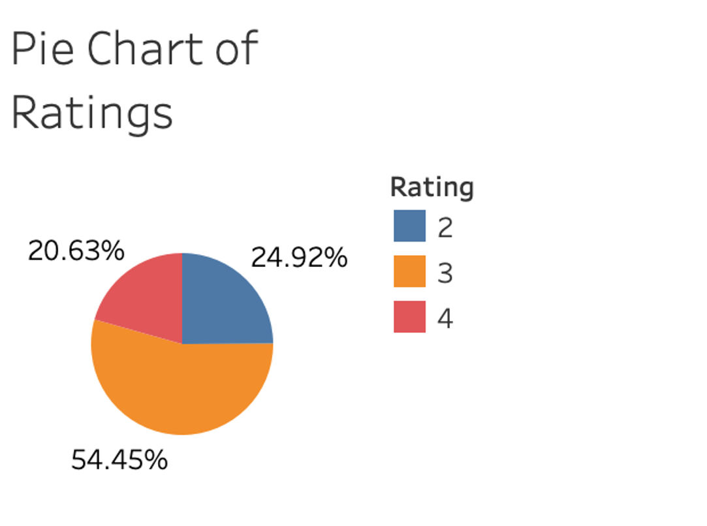
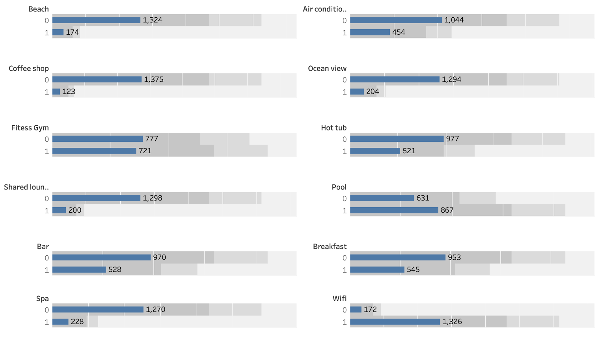
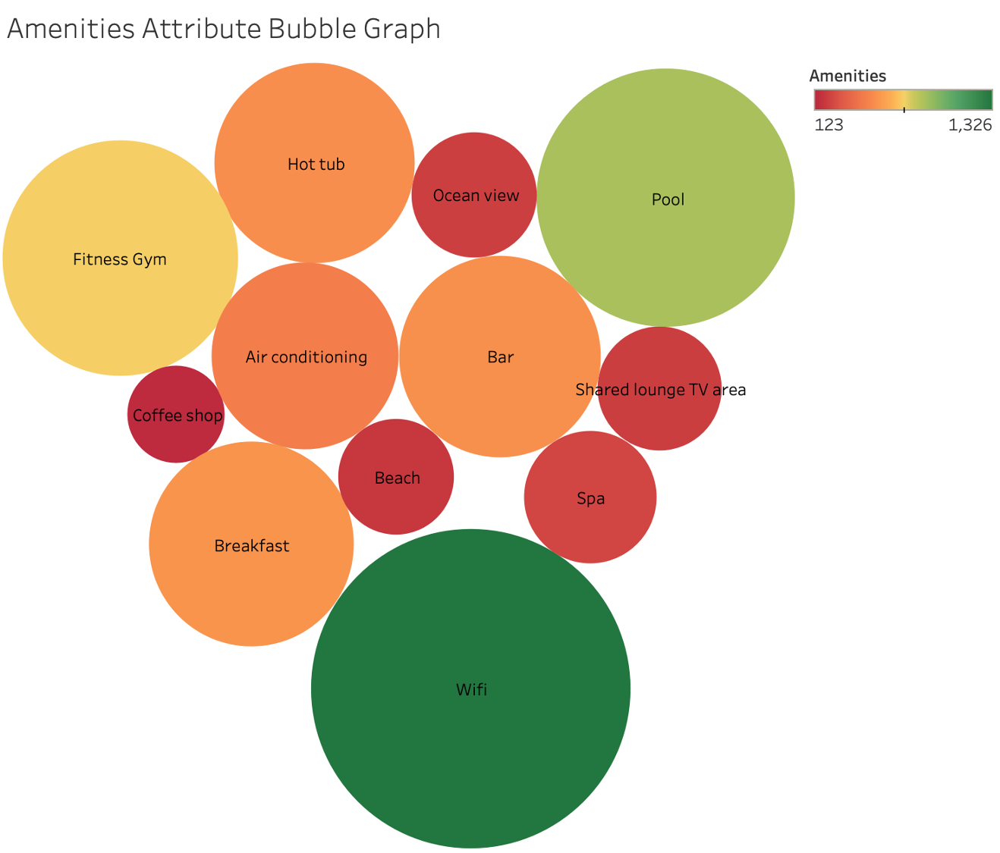

Flight Delay Prediction in NY
Background
Image Credit: pch.vector
Trip planning begins with finding the right accommodations. Before booking a stay, travelers typically investigate, assess, and analyze lodging options in a desired destination. This led to the rise in travel tools like TripAdvisor making it easier for vacationers to compare different potential bookings. Most travelers utilized reviews on TripAdvisor, star ratings, and hotel class ratings to compare between potential bookings.
While star ratings left by reviewers offer valuable insight, less is known about how TripAdvisor calculates a hotel's class rating itself. TripAdvisor states these 1-5 star hotel classes reflect "general amenities and services" based on third-party data. However, studies show discrepancies between advertised and actual hotel quality.
This project applies machine learning to predict hotel classes using TripAdvisor data. By reverse-engineering what drives these ratings, we can identify key attributes that improve a hotel's class. The models provide data-driven guidance to new developers on offering the right amenities to achieve their desired ranking. Further, the ratings allow existing hotels to benchmark their performance against predicted classes from unbiased review analysis. Ultimately, illuminating the factors behind TripAdvisor hotel classes allows travelers to make informed booking decisions, new hotels to set appropriate goals, and the industry to benefit from transparency in reputation metrics.
Dataset
To collect pertinent hotel data, web scraping techniques were implemented to gather information from TripAdvisor.com utilizing Selenium package. The scope of hotels gathered through web scraping was limited to only those located in the greater Los Angeles metropolitan area. This provided a geographic focus for the hotel class prediction models, letting us hone in on defining class rating factors within a specific regional market. Key attributes collected for each hotel included name, location, property amenities, room features, hotel class rating, and traveler ‘s rating, etc.
With over 200 potential hotel attributes available, 15 attributes were collaboratively selected that is expected to be predictor variable for hotel class rating. To determine which amenities of the 15 features were most informative, association rule was employed to obtain information gain. This looked for "rules" linking certain amenities to others, ranked by metrics like confidence, lift and conviction. The algorithm identified beach access, ocean view, and coffee shop presence as having the strongest associations.
EDA (Exploratory Data Analysis)
From the data collected through web scrapping, a thorough exploratory analysis was conducted to understand the features, uncover insights, and prepare the data for modeling. This exploration uncovered established a solid foundation before training machine learning algorithms to predict hotel class. Key findings include:
- As shown in the pie chart, the dataset composed a majority of 3 rating hotel class and less than a quarter of 2 or 4 rating hotel class.
 - This horizontal bar chart depicts the tally of select amenities present at hotels in the collected data, with 1 having the amenity and 0 does not have the amenity.
 - Among the most common hotel facilities in LA included wifi, pool, and fitness gym as visualized in the bubble graph.

Machine Learning Techniques
3 common machine learning models were applied to our dataset: random forest, decision tree, and K-nearest neighbor.
Our dataset was partitioned with an 80/20 training-test split. We tried our model with 1) the original dataset (imbalance class), 2) oversample balanced dataset, and 3) reduced feature subset. SMOTE oversampling technique was applied to balance our imbalanced class dataset to improve model performance. This balanced the class distributions, aiming to improve model training and performance compared to the skewed original data. Here are the best parameters applied to each model used with our dataset.
| Models | Optimal Parameter |
|---|---|
| Random Forest | min_sample_leaf = 5 & n_estimator = 400 |
| Decision Tree | max_depth = 10 & random_state = 0 |
| KNN | n_neighbors = 30 |
Accuracy was selected as the key evaluation metric to benchmark performance of the different machine learning models for hotel class prediction. Here are the results:
Conclusion
Based on the three models ran, the most accurate model was K-nearest neighbor. While random forest and decision tree models attained higher training accuracy after applying SMOTE oversampling, their performance suffered greatly on the testing set. The significant gap indicates these complex models overfit the training data. In contrast, the KNN model demonstrated only a negligible 2% difference between its 62% training accuracy and 60% testing accuracy with the original dataset. This conveys better generalization with less proneness to overfitting compared to the other approaches.
By determining the key drivers behind ratings, current property owners can simulate introducing new features to quantify possible rating improvements. By evaluating the ROI of upgrades, owners can strategically add amenities projected to boost their rating at an acceptable cost. This enables hotels to enhance their reputation and visibility on platforms like TripAdvisor. Additionally, New hotel developers can leverage the tool early in planning by inputting intended amenities and facilities. The model would estimate the likely hotel class rating, allowing adjustments to investment and design to achieve the desired prestige rating in a data-driven manner.
Written By: Tiffany Dinh
In Conjunction With: Runan Yang, Sakshi Menta, Jiahe Zhang, Jasmit Tamber